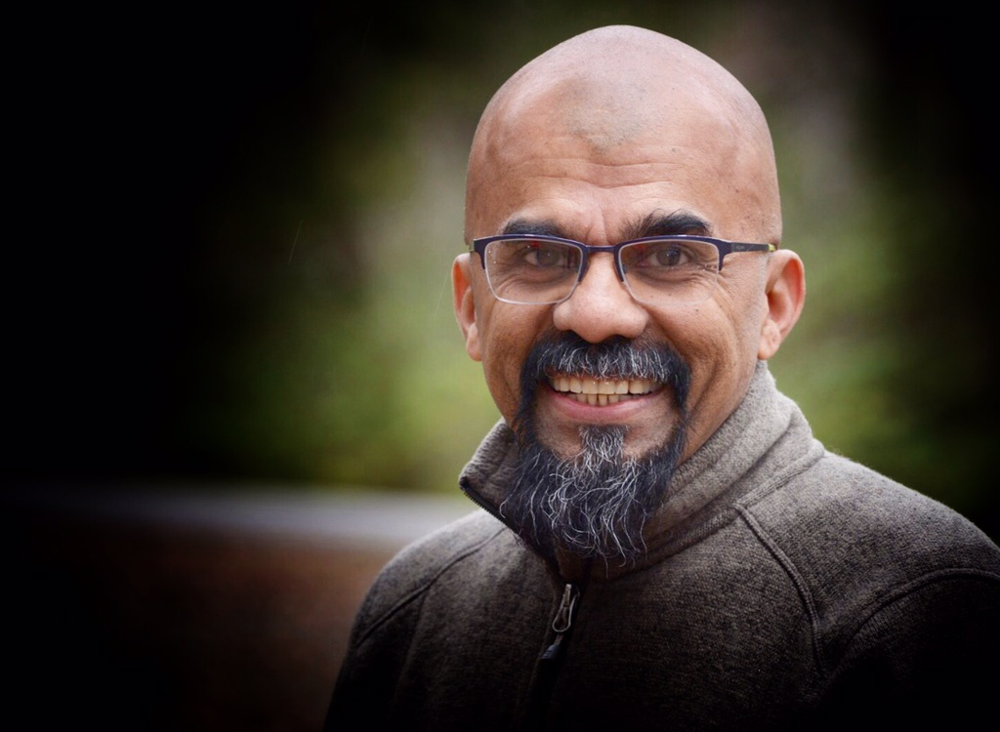
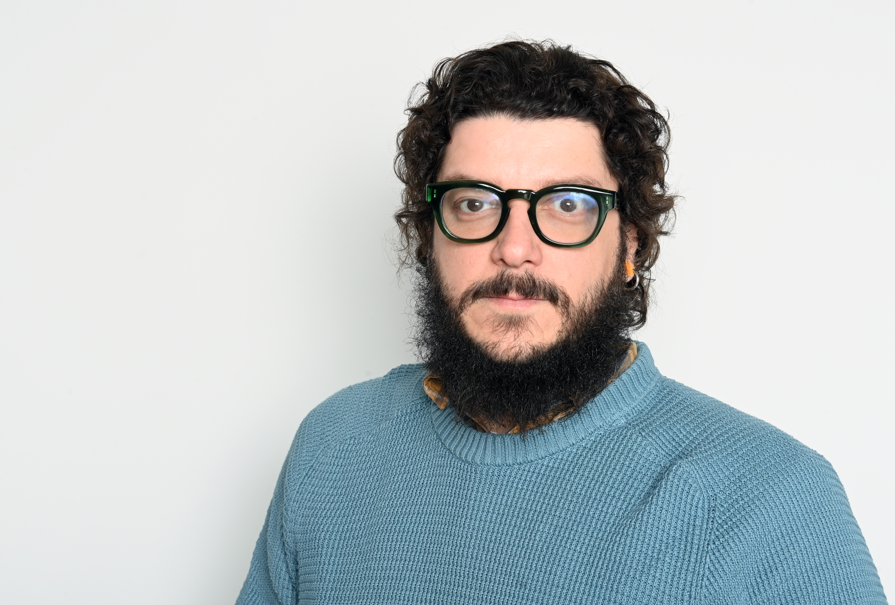
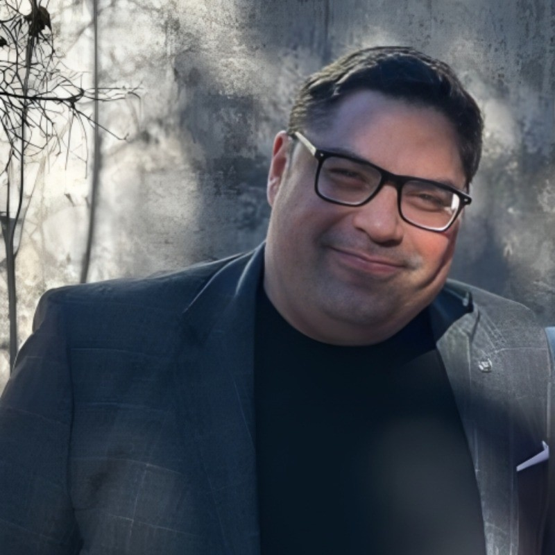
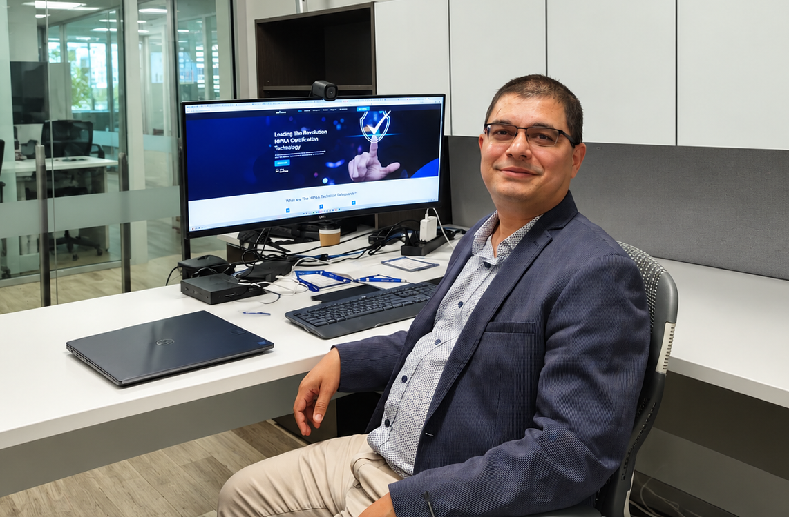
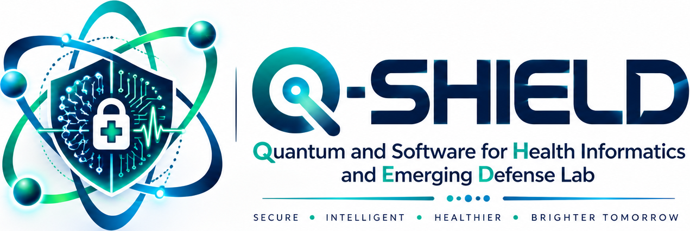

Quantum Foundations
Balraj Menon, Ph.D.
Associate Professor
Department of Physics, Astronomy, and Engineering
University of Central Arkansas
From quantum entanglement to adaptive artificial intelligence: four invited research talks and a UCA student research and capstone showcase exploring emerging computing technologies.
Quantum computing and artificial intelligence are advancing along different technological paths, yet both raise foundational questions about computation, learning, and trust. This seminar connects the physical principles of quantum information with quantum machine learning, adaptive and explainable AI, and emerging cybersecurity challenges.
The program brings together speakers from the University of Central Arkansas, The Catholic University of America, the University of Arkansas at Little Rock, and the University of West Florida. Faculty, undergraduate and graduate students, and researchers from UCA and other colleges and universities are invited to participate.

Associate Professor
Department of Physics, Astronomy, and Engineering
University of Central Arkansas

Assistant Professor
Department of Computer Science
The Catholic University of America

Assistant Professor
University of Arkansas at Little Rock
View talk abstract
Professor; Director of Educational Programs
Center for Cybersecurity
University of West Florida
Explore the seminar presentations, thematic keywords, and full abstracts. The talks appear in the order of the seminar schedule.
Explainable artificial intelligence and continual learning for cyber threats that evolve beyond the assumptions of static models.
Artificial Intelligence (AI) is transforming cybersecurity and many other real-world applications. However, despite impressive advances, significant challenges remain in making AI systems trustworthy, explainable, and adaptable to rapidly changing environments. Traditional machine learning models often assume that training and deployment data follow similar patterns. In reality, cyber threats continuously evolve, new attack strategies emerge, and previously effective models can become outdated. Furthermore, many powerful AI models operate as black boxes, making it difficult for users to understand their predictions or trust their decisions.
This talk explores two important directions for moving AI beyond the hype: Explainable Artificial Intelligence (XAI) and Continual Learning (CL). XAI aims to make AI decisions more transparent, understandable, and actionable, while continual learning enables models to acquire new knowledge and adapt to emerging threats without repeatedly retraining from scratch or forgetting previously learned information. Using cybersecurity as a primary application, we will discuss how these approaches can support intrusion detection, anomaly detection, and evolving threat identification. We will also highlight key challenges, including concept drift, catastrophic forgetting, explanation reliability, and the trade-offs between model accuracy, adaptability, and interpretability.
Through practical examples and ongoing research directions, the presentation will demonstrate how explainability and continual learning can complement each other to create more reliable and sustainable AI solutions. The talk will also discuss opportunities for students and researchers to contribute to the development of AI systems that do more than achieve high benchmark accuracy. These systems should be able to explain their decisions, learn from changing environments, and remain useful in real-world applications.
From qubits and superposition to the Einstein–Podolsky–Rosen paradox, Bell's theorem, and the role of entanglement in quantum computation.
Quantum entanglement is a profound feature of quantum mechanics and an essential resource in quantum information science. This talk introduces the foundational mathematical framework relevant to quantum computing - specifically, the superposition principle, qubits, and entangled states. We will trace the evolution of quantum entanglement from its origins as an apparent paradox articulated by Einstein, Podolsky, and Rosen to its resolution through John Bell's pivotal theorem, concluding with the essential role entanglement plays in quantum computation.
How classical data is encoded into quantum states, processed through circuits, and measured, and where hybrid quantum-classical approaches make practical sense.
Quantum machine learning brings together two exciting fields, but it also raises an important question: how much of a machine learning model actually needs to be quantum? In this talk, I will introduce the fundamental building blocks of quantum machine learning, from encoding classical data into quantum states to processing information through quantum circuits and extracting meaningful results through measurements. We will explore how these components work together and how they can be combined with classical techniques to build hybrid quantum-classical models.
We will discuss the opportunities and limitations of current quantum computing technologies, the challenges of working with quantum data, and the practical decisions involved in designing quantum machine learning models. Ultimately, the goal is not necessarily to make everything quantum, but to understand where quantum computing can make a meaningful contribution.
Investigating hybrid quantum–classical approaches for malware analysis, intrusion and anomaly detection, and cybersecurity under changing and adversarial conditions.
As cybersecurity threats evolve, detection systems must operate under changing data distributions and increasingly sophisticated adversarial behavior. This talk will examine how quantum machine learning and hybrid quantum–classical AI can be investigated for security applications such as malware classification, network intrusion detection, and anomaly detection. It will introduce key design choices, including security-relevant feature selection, quantum data encoding, parameterized quantum circuits, and the integration of quantum models with classical learning methods. The discussion will consider the practical challenges of evaluating these approaches against well-tuned classical baselines, particularly when confronted with class imbalance, previously unseen attacks, adversarial manipulation, and concept drift. It will also address the limitations of near-term quantum hardware, including qubit constraints, circuit noise, data-loading costs, and computational overhead. Rather than assuming that quantum methods automatically outperform classical models, the talk will identify research questions where quantum–AI techniques warrant careful empirical study, with an emphasis on reproducibility, robustness, and trustworthy cybersecurity applications.
10:00 AM – 2:00 PM · DHSC 141 Auditorium, University of Central Arkansas
Alongside the invited faculty presentations, UCA students will showcase research and projects developed through Software Engineering Capstone courses and related student research activities.
The showcase provides an opportunity to engage with student teams, learn about their technical approaches, and discuss how classroom projects connect with research and practical computing challenges.
The seminar is free to attend and welcomes faculty, students, researchers, and academic attendees from UCA and other universities. Advance RSVP is encouraged for planning. ☕ Refreshments will be provided.
Admission is free. Please register in advance to help us plan seating and refreshments.
Use your phone camera or select the button below to open the Google Form.
Complete the RSVP formRegistration responses are collected through Google Forms, not this website.
Organized by the Q-SHIELD Lab, Department of Computer Science and Engineering, University of Central Arkansas, as part of the UCA Quantum Machine Learning Seminar Series.


Quantum Machine Learning in Health Informatics, the second seminar in the UCA series.